| Home | Documentation | Installation | GitHub |
Populse_MIA’s Data Viewer¶
This page is a user guide for Mia’s Data Viewer, a tool to visualize medical images.
Tab presentation¶
- The Data Viewer is composed of seven main elements:
- A selector containing the available viewers
- A toolbar containing the main tools to visualize and interact with the images
- A main window to display the objects
- An object box, containing the loaded objects
- A volume box, containing the displayed volumes
- A coordinates box, giving information about space and time coordinates
- Other accessible tools
Here is a global overview of the Data Viewer tab with some indications:
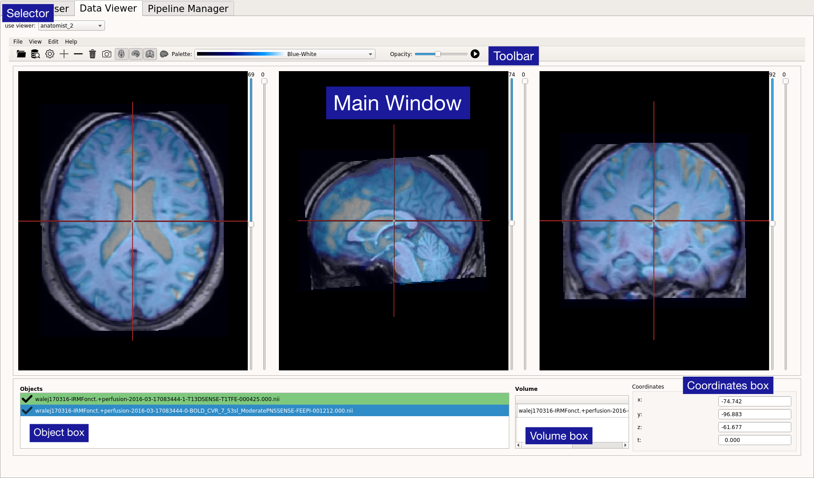The selector¶
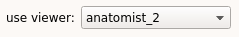A drop-down menu is displayed next to the ‘use viewer:’ label (top left) and contains available viewers. For now, Mia provides two viewers, anatomist and anatomist_2. Both viewers are based on tools provided by the API of Anatomist, available here.
Users own viewers can be simply added to the data_viewer folder. The viewer will then be automatically detected and added to the drop-down menu. Github link of data_viewer folder: https://github.com/populse/populse_mia/tree/master/python/populse_mia/user_interface/data_viewer
In the following section we will focused on anatomist_2 viewer which is an improved version of anatomist viewer.
The toolbar¶
The toolbar contains several actions to interact with the objects (images).
Open file¶

Open files from desktop directory. Files must have an image format (Dicom, NifTi, Bids …). All loaded objects will be displayed in the object box entitled “Objects”. Add a tag for all the documents in the database, specifying its name (mandatory), its default value, a short description, its unit and its type.
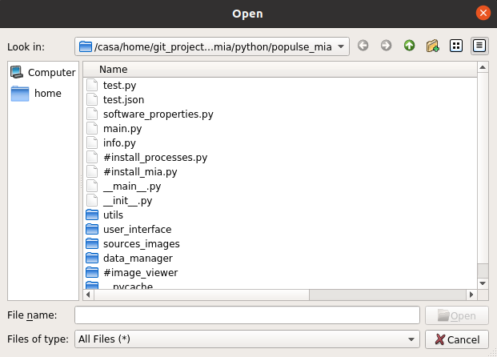Filter object from Data Browser¶
Transfer the objects from the Data Browser to the Data Viewer. Objects will appear in the pop-up shown below. A quick search bar is implemented on top, in order to filter the objects quickly by name. If multiple objects are selected, all will be loaded in the object box but only the first of the list will be displayed in the main window. Objects cannot be imported twice.
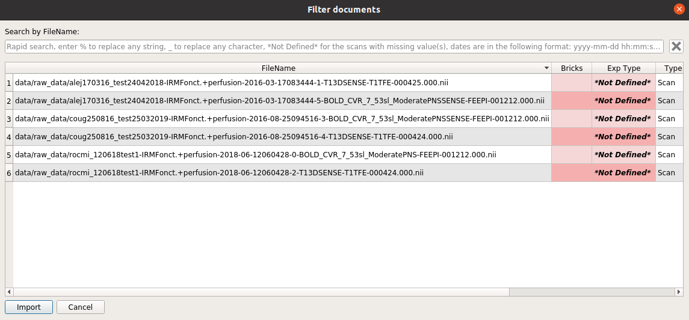Settings¶

- Preferences concerning the Data Viewer. Parameters that can be changed are:
- Number of dynamics per second (frames per second) for automatic running of functional images (see Play button)
- Configuration : neurological or radiological orientation
- Referential (World Coordinates will display images in a conventional way, corresponding most of the time to scanner coordinates)
Objects will be reloaded in the case where configuration or referential has changed.
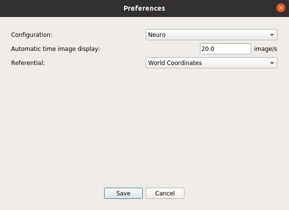Plus button¶

Displays selected object of the object box in the main window. If the object is already displayed, button will be disabled.
Minus button¶

Removes selected object of the object box from the main window. If the object is not displayed, button will be disabled. Objects will be removed from main window but won’t disappear from the object box.
Delete button¶

Deletes selected object from Data Viewer tab. Objects will disappear from the object box and will be removed from main window but they will still be available in the Data Browser and thus from the filter action.

{kind=link}
{kind=link}
{kind=link}
{kind=link}
View buttons¶
Manage the display of the views in the main window (more details in main window section). If no object is displayed, the views will appear empty.
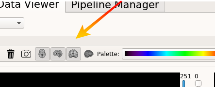{kind=link}
{kind=link}
Axial button
If button is checked, axial view is added to the main window
{kind=link}
Sagittal button
If button is checked, sagittal view is added to the main window
{kind=link}
Coronal button
If button is checked, sagittal view is added to the main window

3D button
If button is checked, sagittal view is added to the main window
Once an object has been loaded, at least one view will always be displayed. Here are two objects displayed in two views:
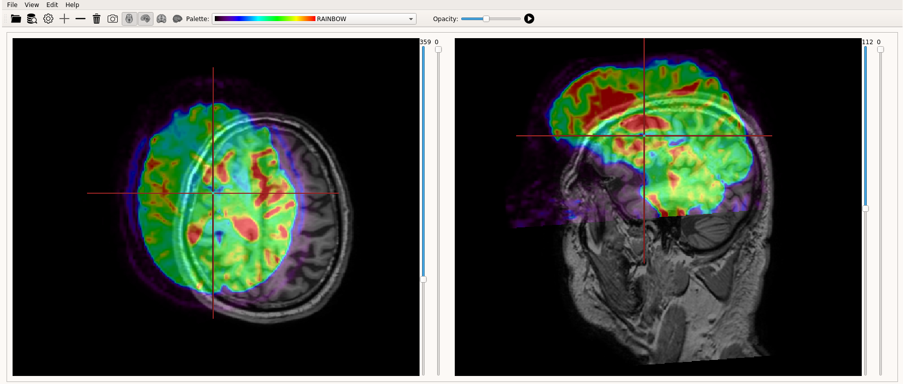{kind=link}
Palettes¶
A drop-down menu is available showing several default color palettes. If an object is selected in the object box, its color palette can be changed in this menu. More palettes are available by right clicking on an object (described below in Object section).
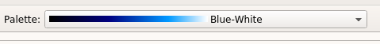{kind=link}
Opacity¶
In order to fully understand how to use this tool some basic notions of Anatomist renderings must be described.
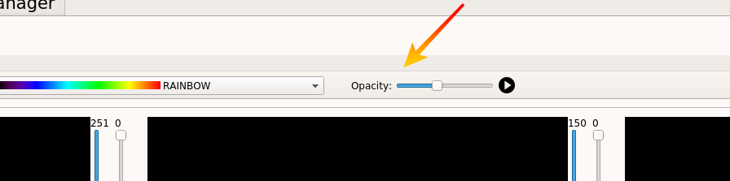{kind=link}
To make this more understandable, we will distinguish two cases:
Only one object is displayed
The opacity slider will change the opacity of the selected object. From left to right the cursor sets opacity from 0 to 100%. If no object is selected, the slider has no effect.
Multiple objects are displayed
Mia’s Data Viewer uses several Anatomist functionalities and when multiple objects are displayed, a fusion of images must be made in order to improve image rendering. Thus, we can’t directly modify the opacity of an object. However, the mixing rate of the objects can be changed. Two examples are described below but the principle is the same and thus it remains valid for more than three objects.
Two objects A and B are displayed
Both objects will be displayed in the main window with respective chosen color palettes and what will in fact appear, is a fusion of both objects. Now, if A is selected and the opacity slider’s position is changed, it will modify the percentage of A in the fusion A-B on the area where both images overlap. Set the position of the slider to the middle will correspond to 50% of A and 50% of B, set the position to 3/4, will correspond to 75% of A and 25% of B. If the cursor is set to 100%, B will completely disappear.
Three objects A, B, C are displayed
The principle is the same, the resulting image is a fusion of all three objects. Now let’s see how the opacity slider works here. C is selected: changing the slider’s position will change the percentage of C in the B-C mix (on the overlapping area). Let’s imagine it’s set to 100%. As seen before, B will completely disappear. Now, B is selected: In theory, what would be expected is that setting the slider’s position to 100% would set B to 100%. Nevertheless, by selecting B, we are modifying the mixing rate of the B-C fusion with A. Thus, setting the cursor’s position to 100% will set the mix to 100% and A to 0. But as a display percentage for B in the B-C mix was chosen before (0%), B won’t appear in the main window.
The interesting thing about this method is that changing the mixing rates instead of simply choosing the opacity gives much more possibilities. On the other hand, changing the mixing rates is not independent from one object to another. Some more specific documentation is available on the Brainvisa-Anatomist website under the following link: https://brainvisa.info/anatomist/user_doc/anatomist_manual2.html#more-on-colors-and-palettes.
Visualized tags¶
Update the tags that are visualized in the table, which can also be changed in the Project properties.
The widget is composed of two lists. The one on the left contains the tags of the database that are not displayed in the table. To make one tag visible, select it in the list and press on the middle cross “–>” to pass it to the list on the right, that contains the visualized tags. Save your changes by pressing “OK”.
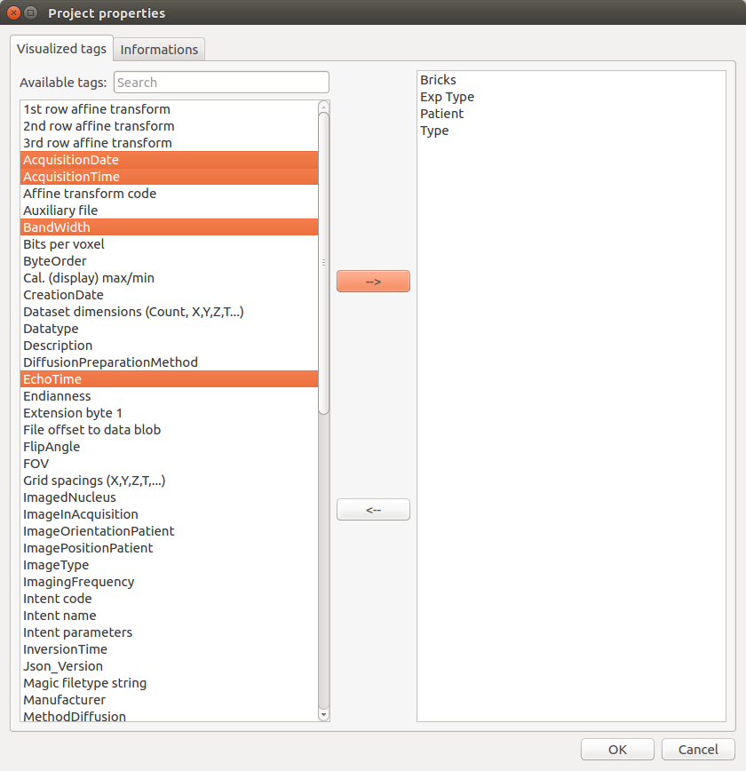Count table¶
Count and verify the scans in the current project.
It is composed of push buttons on its top, each one corresponding to a tag selected by the user. When, the “Count scans” button is clicked, a table is created with all the combinations possible for the values of the first n-1 tags. Then, the m values that can take the last tag are displayed in the header of the m last columns of the table. The cells are then filled with a green plus or a red cross depending on if there is at least a scan that has all the tags values or not.
Example 1:
In this case, by setting the first tag to “Patient” and the second to “Exp Type”, it is possible to see that the MDEFT scan for Patient K49 and the FLASH scan for Patient K51 are missing, which could be problematic for the follow-up of the analysis.
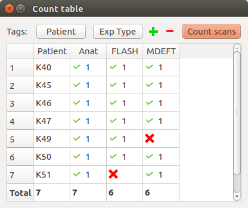Example 2:
Assume that the current project has scans for two patients (P1 and P2) and three time points (T1, T2 and T3). For each (patient, time point), several sequences have been made (two RARE, one MDEFT and one FLASH). Selecting [PatientName, TimePoint, SequenceName] as tags, the table will be:
| PatientName | TimePoint | RARE | MDEFT | FLASH |
|---|---|---|---|---|
| P1 | T1 | v(2) | v(1) | v(1) |
| P1 | T2 | v(2) | v(1) | v(1) |
| P1 | T3 | v(2) | v(1) | v(1) |
| P2 | T1 | v(2) | v(1) | v(1) |
| P2 | T2 | v(2) | v(1) | v(1) |
| P2 | T3 | v(2) | v(1) | v(1) |
with v(n) meaning that n scans corresponds of the selected values for (PatientName, TimePoint, SequenceName).
If no scans corresponds for a triplet value, a red cross will be displayed. For example, if you forget to import one RARE for P1 at T2 and one FLASH for P2 at T3. The table will be:
| PatientName | TimePoint | RARE | MDEFT | FLASH |
|---|---|---|---|---|
| P1 | T1 | v(2) | v(1) | v(1) |
| P1 | T2 | v(1) | v(1) | v(1) |
| P1 | T3 | v(2) | v(1) | v(1) |
| P2 | T1 | v(2) | v(1) | v(1) |
| P2 | T2 | v(2) | v(1) | v(1) |
| P2 | T3 | v(2) | v(1) | x |
Thus, thanks to the CountTable tool, you directly know if some scans are missing.
Rapid search¶
Search for a pattern in the table (for all the visualized tags).
Enter % to replace any string, _ to replace any character , *Not Defined* for the scans with missing value(s). Dates are in the following format: yyyy-mm-dd hh:mm:ss.fff”
Rapid search example:
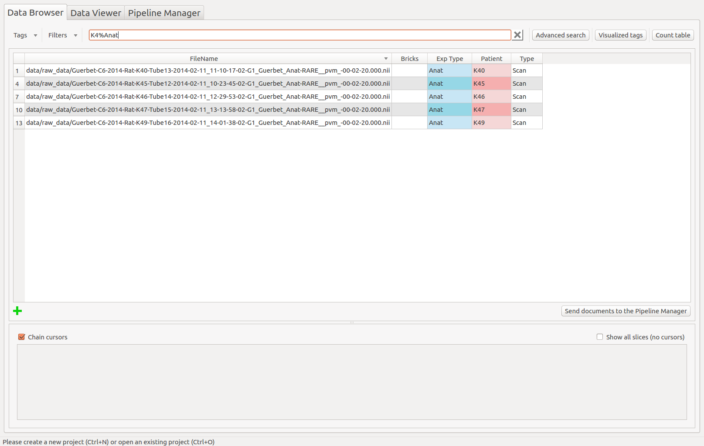Advanced search¶
Create a complex filter to extract the information in the table.
- The advanced search creates a complex query to the database and is a combination of several “query lines” which are linked with AND or OR and all composed of:
- A negation or not
- A tag name or all visible tags
- A condition (==, !=, >, <, >=, <=, CONTAINS, IN, BETWEEN)
- A value
Advanced search example:
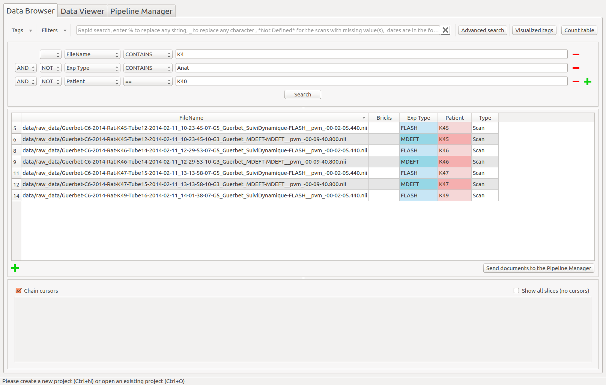The table¶
The table displays the documents contained in the database and their associated tags. Some information about it:
- Any cell can be selected and modified (except the FileName column).
- To select several cells, drag onto them or use Ctrl or Shift.
- A red cell means that the tag is a cloned or a user tag.
- A blue cell means that the original value of the tag has been modified.
- To sort the table depending a column, click one time on its header.
- To select an entire column, double click on its header.
By right clicking in the table, a sub-menu is displayed and contains action to apply on the selected cells. These actions are listed below.
Reset cell(s)¶
Reset the selected cells to their original values.
Reset column(s)¶
Reset the selected columns to their original values (no need to select the entire column).
Reset row(s)¶
Reset the selected rows to their original values (no need to select the entire row).
Clear cell(s)¶
Set the *Not Defined* value to the selected cells.
Add document¶
Add a document to the database. This action can also be done using the green cross on the bottom left of the bottom left of the table.
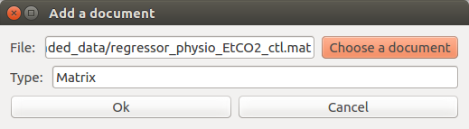Remove document(s)¶
Remove the selected documents from the database.
Select column(s)¶
Select the entire column.
Multiple sort¶
Sort the table on several tag values, in an ascending or descending way.
Example:
Sorting the table in a descending way, for all the Exp Type values and then the Patient values.
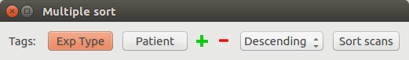The table is now sorted depending on the Exp Type tag, in a descending way. For a same Exp Type value, the documents are sorted depending the Patient values, in a descending way too.
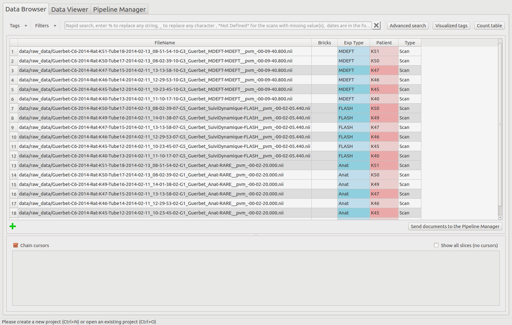Send documents to the Pipeline Manager¶
Use the selected documents to the Pipeline Manager.
A pop-up is displayed to confirm the selected documents. Click on “OK” to use these documents in the follow-up of the analysis.
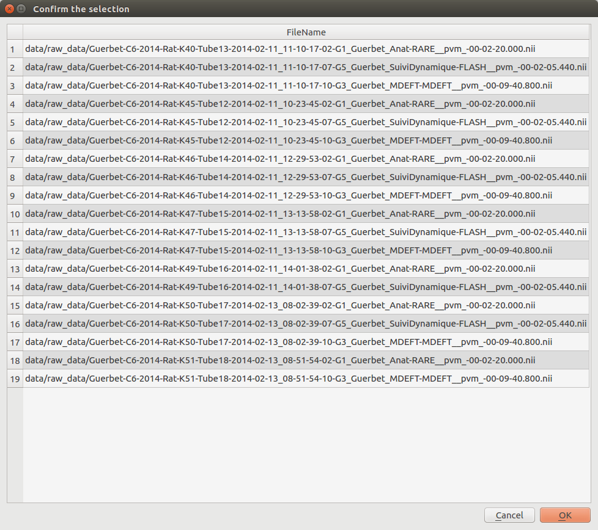The image viewer¶
The Data Browser’s image viewer is a simple tool to display MRI data contained in the database. It can be hidden using the splitter. The selected document(s) (up to 4) in the table are displayed. Several options are available and are described below.
Chain cursors¶
When several documents are selected, moving a cursor moves the same cursors on all the images.
Image viewer with chained cursors:
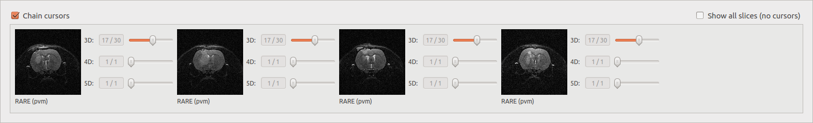Image viewer with unchained cursors:
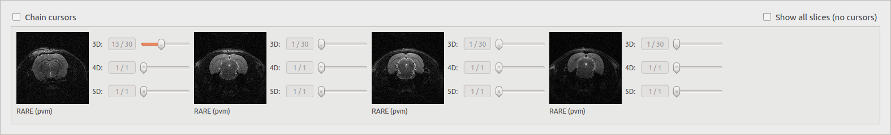Show all slices¶
Display slices of a selected file (work with only one document) depending on the dimension of the image. The number of displayed slices can be modified.
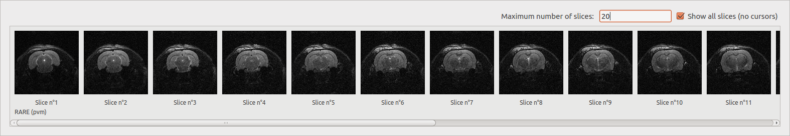
- 3D: display all the slices.
- 4D: display the middle slice of the third dimension for each time of the fourth dimension.
- 5D: display the middle slice of the third dimension for the first time of the fourth dimension for each time of the fifth dimension.
Change the visualized tag¶
By clicking on the label below the images, it is possible to change the tag that is visualized in the image viewer. By default, it is set to SequenceName.
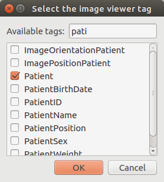The visualized tag has been updated in the image viewer:
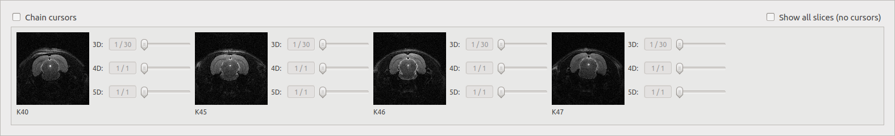